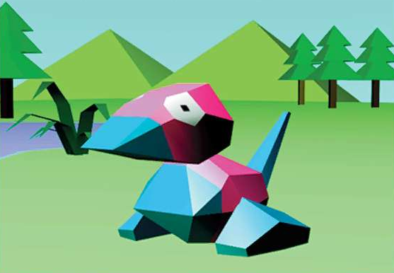

About Me

| Name | Val |
| Pronouns | he/him & she/her |
| Age | 25+ |
| Likes | Gardening, TTRPGs, Going for Walks, Animals (of ALL kinds), Blind Boxes, Drawing |
| Dislike | RGB Lights on Technology, Tortellini, When Squirrels eat my vegatables |